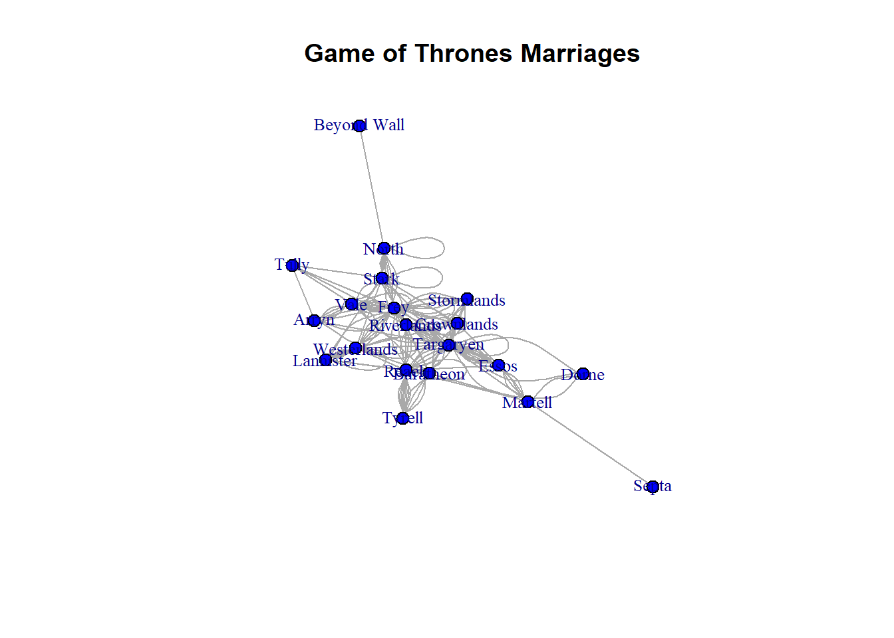

Code
got_marriages <- read_csv("/Users/Bud/Desktop/DACSS_697E_Social Network Analysis_SP2023/Social_Networks_SP_2023/posts/_data/got/got_marriages.csv",show_col_types = FALSE)
View(got_marriages)Cynthia Hester
March 6, 2023
Load necessary libraries
Import the GOT marriages data
Looks at the first five rows and last five rows of data set
# A tibble: 6 x 5
From To Type Notes Generation
<chr> <chr> <chr> <chr> <chr>
1 Targaryen Stark Married R+L=J Current
2 Baratheon Martell Engaged died Current
3 Baratheon Stark Engaged broken Current
4 Martell Essos Married <NA> Current
5 Martell Reach Affair <NA> Current
6 Martell Essos Affair <NA> Current # A tibble: 6 x 5
From To Type Notes Generation
<chr> <chr> <chr> <chr> <chr>
1 Targaryen Crownlands Married <NA> Past
2 Crownlands Stormlands Affair <NA> Past
3 Targaryen Crownlands Married <NA> Past
4 Targaryen Crownlands Married <NA> Past
5 Targaryen Targaryen Married <NA> Past
6 Targaryen Targaryen Married <NA> Past Types of Game of Throne Marriages
IGRAPH 9363713 UN-- 20 255 --
+ attr: name (v/c), Type (e/c), Notes (e/c), Generation (e/c)
+ edges from 9363713 (vertex names):
[1] Targaryen--Stark Baratheon--Martell Baratheon--Stark
[4] Martell --Essos Martell --Reach Martell --Essos
[7] Martell --Essos Martell --Septa Martell --Dorne
[10] Targaryen--Martell Targaryen--Essos Targaryen--Essos
[13] Baratheon--Lannister Baratheon--Vale Baratheon--Riverlands
[16] Baratheon--Crownlands Baratheon--Reach Baratheon--Westerlands
[19] Baratheon--Crownlands Lannister--Lannister Baratheon--Reach
[22] Baratheon--Tyrell Tyrell --Reach Tyrell --Reach
+ ... omitted several edges Network attributes:
vertices = 20
directed = TRUE
hyper = FALSE
loops = TRUE
multiple = TRUE
bipartite = FALSE
total edges= 255
missing edges= 0
non-missing edges= 255
Vertex attribute names:
vertex.names
Edge attribute names:
Generation Notes Type We have 255 vertices/nodes and 20 edges/ties
Name of the vertex or node attribute
Names
[1] "Targaryen" "Baratheon" "Martell" "Lannister" "Tyrell"
[6] "Reach" "North" "Riverlands" "Westerlands" "Stark"
[11] "Vale" "Arryn" "Tully" "Frey" "Crownlands"
[16] "Stormlands" "Essos" "Septa" "Dorne" "Beyond Wall"Name(s) of the edge attributes
Is the network directed or undirected?
[1] "The network is undirected."Is the network weighted or unweighted?
[1] "The network is unweighted."Is the network unimodal or bipartite?
[1] "The network is unimodal."Let’s visualise GOT Marriages network

Dyad census
A dyad census is useful for studying the marriages within the context of Game of Thrones (GOT), specifically in the context of the in_relation to various noble houses and alliances. This provides insight into the power dynamics and political strategies within GOT. For instance, they could examine which Houses formed the most alliances via marriage and how these alliances changed, evolved,grew or disintegrated over time.
Mut - This shows we have 125 mutual relationships, i.e. there are 125 pairs of individuals in the network that have a mutual connection. This makes sense since these are marriages.
Asym - indicates a negative indegree-outdegree difference shows that there is a relatively equalvalent number of incoming and outgoing ties.
Null - indicates that the 130 possible dyads may have no observed relationship.
Triad census
A triad is a group of three nodes that are connected by either two (a “dyad”) or three edges (a “triad”). A triad census involves counting the number of each type of triad that occurs in a network.
003 012 102 021D 021U 021C 111D 111U 030T 030C 201 120D 120U 120C 210 300
[1,] 408 426 18 110 44 47 9 18 50 1 0 3 5 1 0 0Its observed that the high frequency of type 012 triads, which represent marriages where one partner is married to two others who are not married to each other, is consistent with the complexities of marriages and alliances in Game of Thrones. The significant number of type 120U and 120D triads, which represent situations where two people are married to the same person, is also consistent with the practice of polygamy and multiple marriages.
Compute global transitivity using transitivity on igraph or gtrans on statnet and local transitivity of specific nodes of your choice, in addition to the average clustering coefficient. What is the distribution of node degree and how does it compare with the distribution of local transitivity?
Transitivity
Transitivity refers to the extent that nodes or vertices in a network have a tendency to be connected to other nodes that are also connected to each other.
Global Transitivity
[1] 0.4411765The Game of Thrones(GOT) Marriages Global transitivity captures the extent to which nodes or vertices in the network form tightly interconnected clusters. It yields a single value that represents the overall level of clustering in the network. In the context of GOT marriages we get a global transitivity of 0.4411765. This suggests that 44.1 percent of all possible triangles are closed, which indicates a moderately high level of clustering in the network. This makes sense in the context of GOT marriages.
Local Transitivity
[1] 0.3636364 0.4181818 0.4000000 0.7000000 1.0000000 0.3636364 0.1666667
[8] 0.5714286 0.6666667 0.4166667 0.4666667 0.6666667 0.5000000 0.2888889
[15] 0.5714286 0.7000000 0.6000000 NaN 1.0000000 NaNLocal transitivity measures the proportion of triangles centered at a particular node that are closed.For this GOT marriages output it suggests that most of the nodes have moderate to high local transitivity with values ranging from 0.36 to 1.0. This indicates that the many of the characters in the Game of Thrones are highly connected to each other through marriages and alliances.
Of note,there are also a few nodes with low local transitivity, which may indicate these characters might be relatively isolated within the network,and have fewer connections to other characters. Furthermore, it is observed that there are a couple of nodes with missing values (NaN), which means they may have no connections to other nodes in the network.
Shortest path between all pairs of nodes
marriages_sp
0 1 2 3 4
20 120 186 66 8 In order to get the average path length, I first calculate the shortest path between all pairs of nodes in the object marriages_sp. The numbers in the matrix for the shortest path represent the shortest path distances between different pairs of marriages, where each marriage is represented by a node in the network.
Average path length
[1] 1.805Calculates the average path of the GOT marriages network by extracting all the finite elements from the matrix of the previously configured lengths of all pairs of marriage nodes, and then taking the mean of those finite elements. Thus, the average path length appears to be approximately 1.81.
Diameter of GOT Marriage network
[1] 4With a diameter of 4, this suggests that the longest shortest path between any pair of nodes in the GOT marriage network is 4 edges.
[1] "membership" "csize" "no" Calculates connected components of the GOT Marriage network
$membership
Targaryen Baratheon Martell Lannister Tyrell Reach
1 1 1 1 1 1
North Riverlands Westerlands Stark Vale Arryn
1 1 1 1 1 1
Tully Frey Crownlands Stormlands Essos Septa
1 1 1 1 1 1
Dorne Beyond Wall
1 1
$csize
[1] 20
$no
[1] 1In the context of the igraph::components() output a component refers to a subset of nodes in the GOT Marriages network that are connected to each other by edges/ties.
membership - indicates which component each node belongs to.
csize - provides the size of each component,which is a size of 20.
no - indicates the number of components.
---
title: "Challenge 2"
author: "Cynthia Hester"
description: "Describing the Basic Structure of a Network"
date: "03/06/2023"
format:
html:
toc: true
code-fold: true
code-copy: true
code-tools: true
# editor: visual
categories:
- Cynthia Hester
- challenge_2
---
### Challenge 2
```{r}
#| label: setup
#| include: false
knitr::opts_chunk$set(echo = TRUE)
```
********************************************************************************
Load necessary libraries
```{r,include=FALSE}
library(igraph)
library(tidyr)
library(statnet)
library(readr)
```
********************************************************************************
Import the GOT marriages data
```{r,results='hide'}
got_marriages <- read_csv("/Users/Bud/Desktop/DACSS_697E_Social Network Analysis_SP2023/Social_Networks_SP_2023/posts/_data/got/got_marriages.csv",show_col_types = FALSE)
View(got_marriages)
```
__Looks at the first five rows and last five rows of data set__
```{r}
#first five rows of marriages data
head(got_marriages)
```
```{r}
#last five rows of marriages data
tail(got_marriages)
```
__Types of Game of Throne Marriages__
```{r}
table(got_marriages$Type)
```
********************************************************************************
### Create a network object
```{r}
# new network object
marriages.ig <- graph_from_data_frame(got_marriages, directed = FALSE)
# Dataframe summary
print(marriages.ig)
```
********************************************************************************
### Network Attributes
```{r}
#network attributes
got_marriages.stat <- as.network(got_marriages, loops = TRUE, multiple = TRUE)
print(got_marriages.stat)
```
We have 255 vertices/nodes and 20 edges/ties
__Name of the vertex or node attribute__
```{r}
# node attribute name
vertex_attr_names(marriages.ig)
```
__Names__
```{r}
#names extracted from the names column
V(marriages.ig)$name
```
__Name(s) of the edge attributes__
```{r}
# edge attribute name(s)
edge_attr_names(marriages.ig)
```
__Is the network directed or undirected?__
```{r}
is_directed<-is_directed(marriages.ig)
if (is_directed) {
print("The network is directed.")
} else {
print("The network is undirected.")
}
```
__Is the network weighted or unweighted?__
```{r}
is_weighted<-is_weighted(marriages.ig)
if (is_weighted) {
print("The network is weighted.")
} else {
print("The network is unweighted.")
}
```
__Is the network unimodal or bipartite?__
```{r}
is_bipartite <- is_bipartite(marriages.ig)
if (is_bipartite) {
print("The network is bipartite.")
} else {
print("The network is unimodal.")
}
```
__Let's visualise GOT Marriages network__
```{r}
# plot marriage network
plot(marriages.ig,
vertex.size = 7,
vertex.color = "blue",
vertex.label.cex = 0.8,
main = "Game of Thrones Marriages")
```
********************************************************************************
### Dyad and Triad Census
**Dyad census**
A dyad census is useful for studying the marriages within the context of Game of Thrones (GOT), specifically in the context of the **in_relation** to various noble houses and alliances. This provides insight into the power dynamics and political strategies within GOT. For instance, they could examine which Houses formed the most alliances via marriage and how these alliances changed, evolved,grew or disintegrated over time.
```{r}
#Dyad Census
dyad.census(got_marriages.stat)
```
**Mut** - This shows we have 125 mutual relationships, i.e. there are 125 pairs of individuals in the network that have a mutual connection. This makes sense since these are marriages.
**Asym** - indicates a negative **indegree-outdegree** difference shows that there is a relatively equalvalent number of incoming and outgoing ties.
**Null** - indicates that the 130 possible dyads may have no observed relationship.
********************************************************************************
**Triad census**
A triad is a group of three nodes that are connected by either two (a "dyad") or three edges (a "triad"). A triad census involves counting the number of each type of triad that occurs in a network.
```{r}
##triad census
triad.census(got_marriages.stat)
```
Its observed that the high frequency of __type 012__ triads, which represent marriages where one partner is married to two others who are not married to each other, is consistent with the complexities of marriages and alliances in Game of Thrones. The significant number of __type 120U and 120D__ triads, which represent situations where two people are married to the same person, is also consistent with the practice of polygamy and multiple marriages.
********************************************************************************
### Global and Local Transitivity or Clustering
Compute global transitivity using `transitivity` on `igraph` or `gtrans` on `statnet` and local transitivity of specific nodes of your choice, in addition to the average clustering coefficient. What is the distribution of node degree and how does it compare with the distribution of local transitivity?
**Transitivity**
Transitivity refers to the extent that nodes or vertices in a network have a tendency to be connected to other nodes that are also connected to each other.
**Global Transitivity**
```{r}
#global transitivity
got_global_transitivity = transitivity(marriages.ig, type = 'global')
got_global_transitivity
```
The Game of Thrones(GOT) Marriages *Global transitivity* captures the extent to which nodes or vertices in the network form tightly interconnected clusters. It yields a single value that represents the overall level of clustering in the network. In the context of GOT marriages we get a global transitivity of **0.4411765**. This suggests that **44.1 ** percent of all possible triangles are closed, which indicates a moderately high level of clustering in the network. This makes sense in the context of GOT marriages.
**Local Transitivity**
```{r}
#local_transitivity
got_local_transitivity = transitivity(marriages.ig, type = 'local')
print(got_local_transitivity)
```
**Local transitivity** measures the proportion of triangles centered at a particular node that are closed.For this GOT marriages output it suggests that most of the nodes have moderate to high local transitivity with values ranging from **0.36 to 1.0**. This indicates that the many of the characters in the Game of Thrones are highly connected to each other through marriages and alliances.
Of note,there are also a few nodes with **low local transitivity**, which may indicate these characters might be relatively isolated within the network,and have fewer connections to other characters. Furthermore, it is observed that there are a couple of nodes with missing values **(NaN)**, which means they may have no connections to other nodes in the network.
********************************************************************************
### Path Length and Component Structure
__Shortest path between all pairs of nodes__
```{r}
#shortest path between all pairs of nodes
marriages_sp<-shortest.paths(marriages.ig)
table(marriages_sp)
```
In order to get the average path length, I first calculate the shortest path between all pairs of nodes in the object **marriages_sp**. The numbers in the matrix for the shortest path represent the shortest path distances between different pairs of marriages, where each marriage is represented by a node in the network.
__Average path length__
```{r}
# average path length
marriages_avg_path_length<-mean(marriages_sp[is.finite(marriages_sp)])
marriages_avg_path_length
```
Calculates the average path of the **GOT marriages** network by extracting all the finite elements from the matrix of the previously configured lengths of all pairs of marriage nodes, and then taking the mean of those finite elements. Thus, the average path length appears to be approximately **1.81**.
**Diameter of GOT Marriage network **
```{r}
# Compute the diameter of network
marriage_diameter <- diameter(marriages.ig)
# diameter of marriage network
print(marriage_diameter)
```
With a diameter of **4**, this suggests that the **longest shortest path** between any pair of nodes in the GOT marriage network is 4 edges.
********************************************************************************
### Component Structure of network
```{r}
# component names extracted from got_marriages data
names(igraph::components(marriages.ig))
```
**Calculates connected components of the GOT Marriage network**
```{r}
#calculates connected components using the components function.
igraph::components(marriages.ig)
```
In the context of the __igraph::components()__ output a component refers to a subset of nodes in the GOT Marriages network that are connected to each other by edges/ties.
**membership** - indicates which component each node belongs to.
**csize** - provides the size of each component,which is a size of **20**.
**no** - indicates the number of components.